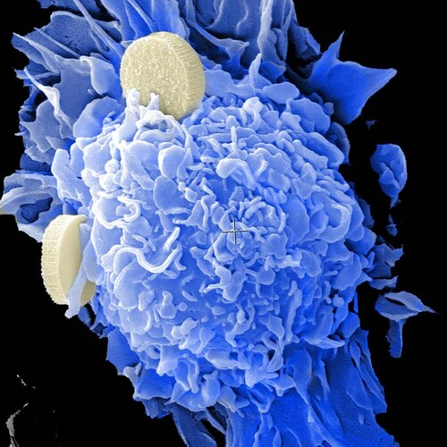

#223: The Programmers
Friday, October 9th 2020, 3:01:58 pm
They were students, researching, thinking, learning,
they were not renowned scientists, they were just bored programmers looking for a challenge.
Something greater than mathematics, or algorithms, or languages,
they were looking for something more than any of their computers could simulate.
So they started programming,
programming a class of machines that could repair and rebuild themselves.
Really basic stuff, the machines would rely on,
whatever they could absorb from their environment.
They needed to survive indefinitely,
machines that could make machines, and repair, and renew.
A few milestones down the road,
they started thinking about practical applications.
They created tiny capsules that could be launched into already accelerated asteroids,
and even though the capsules were tiny, they had the ability to make countless copies,
and build bacterial colonies large enough to Terraform distant exo-planets.
Upon reaching a nearby stars,
capsules would disperse from forces of gravity and solar radiation.
Eventually land on the nearby exo-planets,
and begin executing their adaptation routine and create copies uniquely bound to the local chemistry.
The programmers setup a simple sequence of steps that would either induce early death,
or later reproduction, with pushing the more adapted information onto the offspring.
All because, there was nothing they could do to create something that would outlast time,
everything decays, we are all bombarded with radiation, protons and muons, and asteroids.
To create something lasting,
it would have to renew it self, rebuild adapt.
It would have to self assemble into colonies or microbiomes,
destroy the problematic, and promote the more adapted.
And spread, and grow, and continue adapting,
the DNA system was noisy enough to allow all kinds of variation.
There was nothing else that could work,
only cellular machinery could adapt without radio, soldering irons, without a forge, without tools,
without a source of heat even, without hands, or brains.
Getting the propulsion systems to work was just as amazing,
anything that whizzed by from small meteors to comets and large asteroids was infused with the capsules.
They even used lasers to accelerate some of the capsules to relativistic speeds,
the cells stored inside the capsules barely noticed any passage of time at all.
Eventually, everything that could sustain DNA based life,
was filled to the brim with it.
Comets, meteors, asteroids would further spread the little machines,
galaxies became cross-contaminated multiple times.
Life is everywhere,
and everywhen.
The Virgo Cluster did not receive the original genetic material,
we have evolved across countless solar systems and many galaxies.
The capsules contained a lot more than generic programming,
they contained instructions on how to establish an interface with it, and maintain it.
And they contained instructions,
on getting back Home, to Methuselah Prime.
